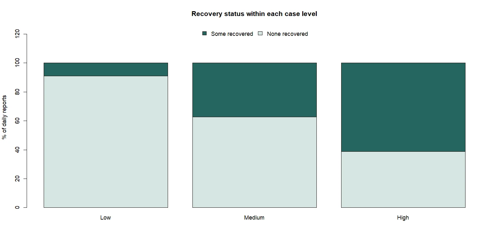

Discussion / Misinterpretation of statistical information
When statistical measures create false confidence
A discussion post using the COVID-19 India daily reports to show how a very small p-value and a large effect can still mislead when the assumptions underneath them do not hold.
Discussion post
Across 270 daily COVID-19 reports, the proportion showing at least one recovery rose from 9.0% at Low case severity to 61.1% at High severity. A chi-square test returned p = 1.173 × 10⁻¹⁰, and Cramér’s V came to 0.41. I first read those figures as evidence of a clear relationship between severity and recovery. The data structure makes that reading unsafe.

Text description of Figure 1
Three bars, one for each case-severity level (Low, Medium and High), each showing the percentage of daily reports with and without a recorded recovery. The proportion with at least one recovery rises from 9.0% at Low severity to 61.1% at High severity, as the opening paragraph states. The Medium bar lies between the two.
Tijssen (2021) presents a strong case for reporting effect estimates and confidence intervals instead of isolated p-values. Confidence intervals display uncertainty around an estimate. P-values communicate neither effect size nor practical importance. I ran prop.test(11, 18)$conf.int for the High-severity category and got an approximate 95% confidence interval of 36% to 82%. I found the interval more informative because it displayed substantial uncertainty.
The assumption that broke was independence. The 18 reports came from only five places, with Kerala and Maharashtra contributing 14. By treating repeated daily observations as independent, I inflated the apparent sample size. Because of that inflation, I read the interval and p-value as more precise than the evidence warranted. I also selected the severity thresholds after examining the distribution. I did not build that analytical choice into the interval.
Greenland et al. (2016) argue that researchers must interpret confidence intervals and p-values through the complete statistical model, including its assumptions about sampling, independence and analysis. Their argument explains why a confidence interval cannot serve as a conventional measure of uncertainty when major assumptions fail. I can run the calculation in R. I cannot justify it from the model.
Time also confounded the apparent relationship because confirmed cases and recoveries were cumulative totals, and High-severity reports occurred later than Low-severity reports. Both totals therefore had more time to increase. I used the p-value to gauge the table’s incompatibility with the null model, but it could not identify the association’s magnitude or likely explanation. I got the first from Cramér’s V and the row percentages. I got nothing from the output for the second.
Tijssen’s recommendation improves statistical reporting only when the model supports the calculation. Researchers should withhold conventional confidence intervals when broken assumptions make their stated coverage misleading. Better presentation cannot repair invalid inference.
References
- Greenland, S., Senn, S.J., Rothman, K.J., Carlin, J.B., Poole, C., Goodman, S.N. and Altman, D.G. (2016) 'Statistical tests, P values, confidence intervals, and power: a guide to misinterpretations', European Journal of Epidemiology, 31(4), pp. 337–350. doi: 10.1007/s10654-016-0149-3.
- Tijssen, J.G.P. (2021) 'More confidence intervals and fewer p values: a positive trend?', Journal of the American College of Cardiology, 77(12), pp. 1562–1563. doi: 10.1016/j.jacc.2021.02.004.